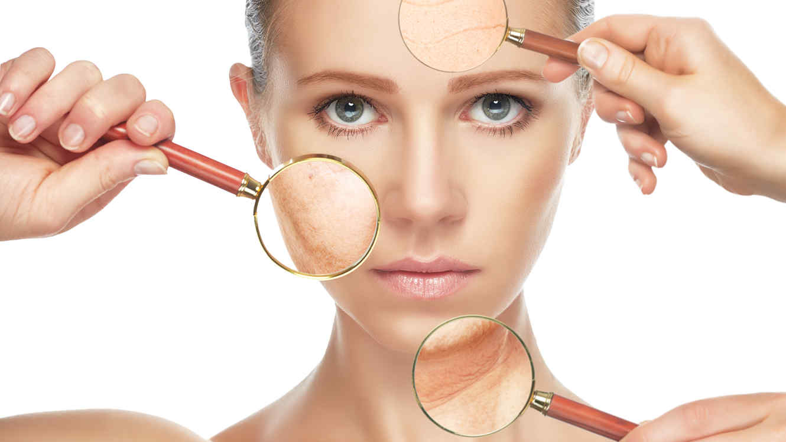

Меланомот е рак на кожа која потекнува од клетките на кожата наречени меланоцити. Тоа се клетки кои на вашата кожа и го даваат тенот. Додека се сончате меланоцитите произведуваат црн пигмент –меланин кој има основна улога да ја заштити кожата од ултравиолетови зраци а од друга страна вам ви го овозможува оној прекрасен бакарен тен. Вистинската причина за појава на меланомот сеуште не е позната. Се смета дека изложувањето на сончевите зраци и на другите извори на ултравиолетово зрачење е најголем фактор на ризик за настанување на кожниот карцином и тоа повременото изложување на сонце. Во последно време големо значење како причинител се дава на наследната компонента . Така меланомот е почест кај лица со светол тен, сини или зелени очи со светла или црвена коса кои лесно поцрвенуваат и горат на сонце. третина од случаите малигниот меланом потекнал од некоја од пигментираните бемки по телото па зголемен ризик на настанување има кај лице кое има повеќе од 50 бемки на својата кожа. Просечно по телото секој човек има од 15 до 20 различни пигментирани бемки или дамки. Во ризик фактори се вбројува и податок за сончеви изгореници со пликови во детсво или тинејџерска возраст
Хируршкото лекување со хируршко отстранување на сомнителните промени во целост дава најдобри резултати. Малите ограничени промени со барем еден од сомнителните знаци за малиген меланом треба да се отстранат по оперативен пат, со три сантиметри од здравата околна кожа. Потоа патохистолошки се потврдува дијагнозата. Промените што веќе се големи со неколку знаци за малиген меланом честопати се со метастази во локалните лимфни јазли или во други органи во телото. Оваа состојба се лекува комбинирано – хируршки се отстранува меланомот со голема површина кожа и регионалните лимфни јазли. Потоа се комбинира цитостатска терапија со лекови за активирање на имунолошкиот систем. Сепак кај овој стадиум на меланом процентот на излекување е многу мал Дакарбазинот може да се дава како монотерапија во дози од 200 до 250 мг/м2 од површината на телото, во форма на интравенска (ив) инјекција во текот на пет дена на секои три недели.
Се советува лекарски преглед еднаш месечно во првата година,на два месеци во тек на втората година и понатаму на секои три месеци. Рендгенографија на бели дробови,ехосонографија на црн дроб и биохемиски анализи се прават еднаш на шест месеци во првите две години а потоа еднаш годишно. Битно е да се потенцира важноста на самопрегледот на кожата и пратењето на нормалните бемки кои ги имаме по кожата, а кои не се малигни, но можат да преминат во малиген меланом..